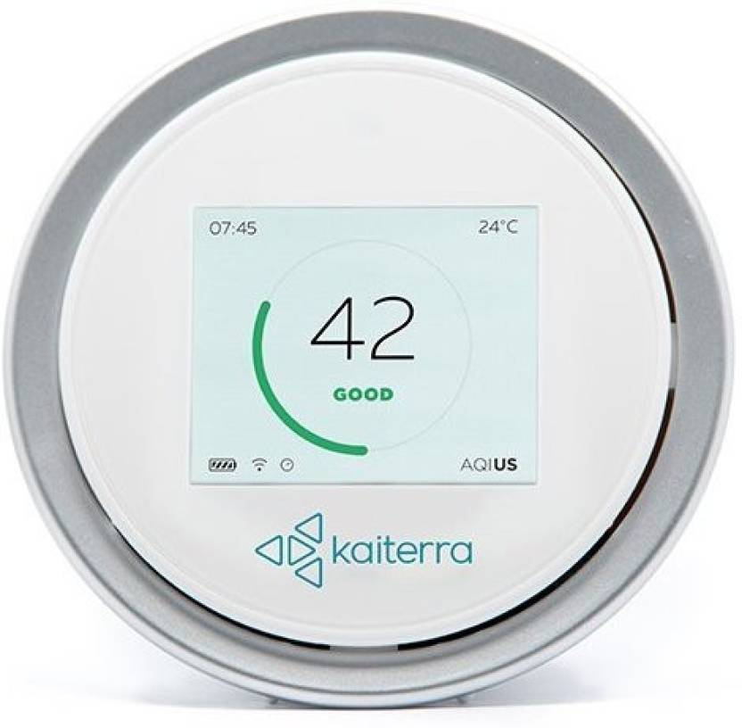
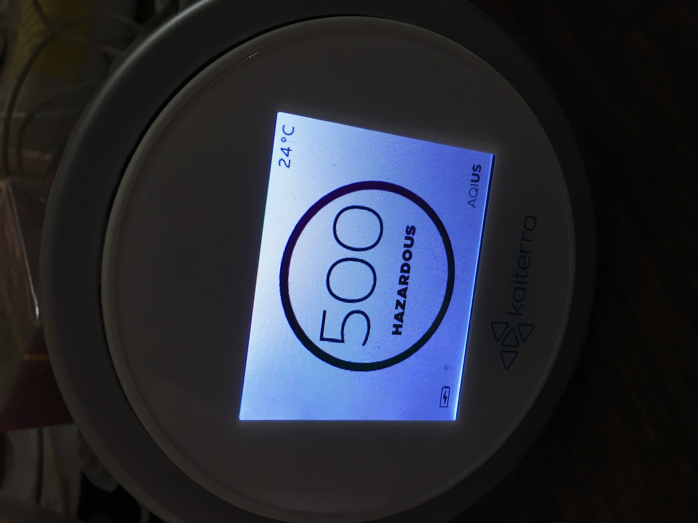
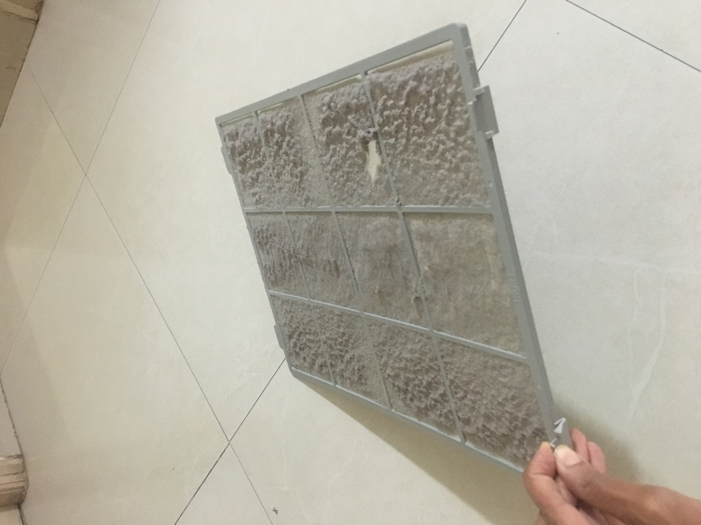
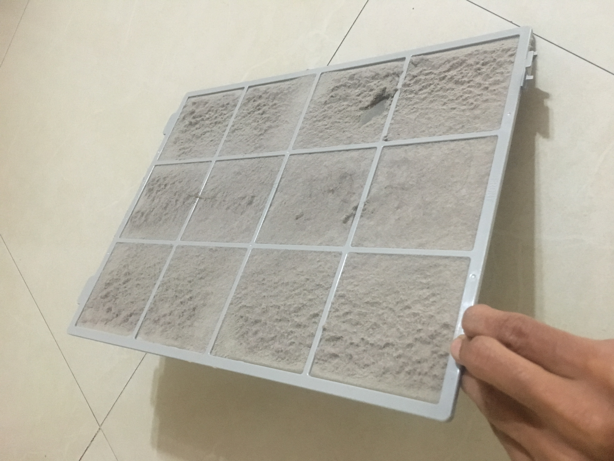

Every winter a drama happens in New Delhi. I live in Bangalore, but Delhi being the national capital, I watch the drama with interest.
As the winter sets in, air quality of Delhi is reported at historically poor levels. Where AQI (air quality index) of 0-50 is considered good, 50-100 is acceptable and 100-150 is unhealthy, New Delhi starts reporting 500+ and every successive year, ever higher numbers are reported. This year, I heard numbers to the tune of 900+.
Some international sports team express concern about playing matches in Delhi. We hear statistics like breathing Delhi air is like consuming 100 cigarettes per day. We see very grotesque lung images on cigarette packets to deter people from smoking. Who will draw proportionately grotesque images to induce authorities to act, or people to leave Delhi?
Some blame stubble burning in adjoining states, some blame the fire cracker heavy festival of Diwali and some blame vehicular traffic.
Some urgent meetings are called, outdoor activities are shutdown, schools are closed for a few days. Then the CM of Delhi announces "odd even" rule: odd numbers vehicles only should ply on odd dates and even numbers vehicles only should play on even dates. But then government has to worry about the convenience of the population, so two wheelers are exempted, women are exempted, cars carrying children are exmpted, schools carrying buses are exempted and ministers are exempted.
After next few days, CM declares victory. AQI levels drop to 300 or 400, which is merely "hazardous" and not so unimaginably high that western scientists used to good weathers did not even care to give a descriptive name. Stubble burning is also finished. Now that Delhi air is only worth 20-30 cigarettes a day, everyone forgets about it.
The cycle repeats next year, with higher reported AQI numbers.
A quick check on http://aiqcn.org shows that AQI of Bangalore (~100) is much better than Delhi (~400) but no match for, for eg. Taipei (~30) where I lived for several months lately, or San Francisco (~30), where I used to live long ago.
But Bangalore air is not uniform and I do not know where its air quality monitors are located. So, I decided to measure AQI at my home. For this purpose, I purchased an air quality monitor. This Kateirra Laser Egg is what I purchased.
Now there were two unknowns: My house AQI and Kateirra Laser Egg device, since I did not have first hand proof that the device was accurate.
I found that for most of the day, AQI was between 120 and 180. It dipped in the 80-100 range during the night (say 2 AM to 7 AM), and rises to 200-250 range during peak traffic times (9 AM - 11 AM and 6 PM - 8 PM). So, the device was at least directionally correct. Further, when there was cooking smoke in the house, readings shot to 400+, further strengthening my trust in the device.
So, AQI at my house was much worse than ~100 reported levels on AQI website. My house is next to a moderately busy road, so I thought that a bit isolated home would have better AQI levels. A friend of mine lives in a house which is next to a road with much lesser traffic. I experimented in his home, but the levels were were similar to what I observed at my home. We rationalized this observation by noting that his home is around 1 km from a very busy road, and around 1.5km from another very busy road, so perhaps that is the reason of poor AQI levels.
I once went to a resort on the outskirts of Bangalore. It is also next to a busy road. There, I found the AQI to be in the range 40-60 for most parts of the day. So, the conclusion is that you cannot escape poor air if you are in the city, but air quality is good just outside the city.
Now that I knew that AQI in my home is not good, can we use air purifiers to ameliorate the situation? Before we do that, let's first get into some theory.
In atmosphere, both pre industrial and post industrial, there are micro particles floating in the air. Some of these particles are dust and pollen grains. Since they have been present in the air for hundreds of millions of years, our lungs have developed, via natural selection, the capacity to filter out such particles and so these particles don't reach our blood stream.
Post industrial atmosphere is characterized by burning. We burn coal to produce electricity, we burn fuel to drive vehicles and farmers in Haryana and Punjab burn stubble to dispose them off. Burning produces particles whose size is much smaller than dust or pollen grains. In particular it produces PM 2.5 - particulate matter of diameter less than 2.5 microns. They are so small that our lungs do not have capacity to filter them off. This is a phenomenon of last 100 years and our bodies have not evolved to deal with it. Since lungs are not able to filter out these particles, they reach blood stream and to various organs including the brain. So they can cause diseases such as lung cancer and heart diseases
What is worse, our body does not have a mechanism to get rid of these particles. So, once they reach your body, they reside there permanently.
Concentration of PM2.5 is expressed in micro grams per cubic meter of air (μg/m3). Though there is no safe limit of PM2.5 exposure (any exposure is bad), various countries have come up with "safe limits" which they strive to follow. Here are the limits of various countries.
| WHO | USA | EU | China | India | |
|---|---|---|---|---|---|
| Yearly Limit | 10 | 12 | 25 | 35 | 40 |
| Daily Limit | 25 | 35 | - | 75 | - |
Eg. US has yearly and daily limit of 12 μg/m3 and 35 μg/m3 respectively. It means that average annual exposure should be less than 12 μg/m3, but on a given day, an exposure of 35 μg/m3 is acceptable.
So, how is Bangalore air like? The air quality meter measures PM2.5 too, and here are typical values at my home:
| Time | Value (μg/m3) |
|---|---|
| 2 AM - 7 AM | 30 |
| 7 AM - 9 AM | 30-150 |
| 9 AM - 11 AM | 150-200 |
| 11 AM - 6 PM | 45-120 |
| 6 PM - 8 PM | 150-200 |
| 8 PM - 2 AM | 80 |
As you can see, the AQI values are always above the yearly limit set by WHO or US, and mostly even above the much relaxed limit set by India.
PM2.5 is the fundmanental truth: the density of bad particles. AQI is a human-readable re-interpretation of PM2.5 base values. Thus, PM2.5 to AQI is a mathematical function. The way this function works is following:
| PM2.5 Level | AQI |
|---|---|
| 0 | 0 |
| 12 | 50 |
| 35 | 100 |
| 55 | 150 |
| 150 | 200 |
| 250 | 300 |
| 350 | 400 |
| 500 | 500 |
Let's calculate AQI for PM2.5 level 75. Just before 75, we have 55, whose AQI is 150, and just above 75 we have 150, whose AQI is 200. Thus, AQI for PM2.5 level of 75 is $150 + \frac{200 - 150}{150 - 55}(75 - 55)$ = 160
Now that we have mapped PM2.5 levels to AQI, AQI ranges are characterized thus:
| AQI range | Air quality description |
|---|---|
| 0-50 | Good |
| 50-100 | Moderate |
| 100-150 | Unhealthy for sensitive groups |
| 150-200 | Unhealthy |
| 200-300 | Very unhealthy |
| 300-500 | Hazardous |
With this knowledge, we can summarize my observations about air quality at my as following:
| Time | PM2.5(μg/m3) | AQI | Descriptive quality |
|---|---|---|---|
| 2 AM - 7 AM | 27-32 | 80-100 | moderate-unhealthy |
| 7 AM - 9 AM | 30-150 | 100-200 | unhealthy |
| 9 AM - 11 AM | 150-200 | 200-250 | very unhealthy |
| 11 AM - 6 PM | 45-120 | 120-180 | unhealthy for sensitive people |
| 6 PM - 8 PM | 150-200 | 200-250 | very unhealthy |
| 8 PM - 2 AM | 100 | 170 | unhealthy |
Now that we know that the air in Bangalore is consistently in "Unhealthy" and "Very unhealthy" levels, can we do something about it? Air quality is not a priority for government, even in Delhi, then what to say of Bangalore. So, we can we do something at private level?
One after the other, I purchased two air purifiers:
I have been satisifed with the air purifiers, in that they have worked as advertised. When used, they can drive down the AQI of the room below 50. Chhaya felt that she was having better sleep when air purifier was working, which might be attributable to better air, but could also be attributable to placebo effect, or a gentle breezy sound being made by the purifier.
When I cleaned the filters of air purifiers in around 2 months, they were completely covered with a thick layer of dust.
 So, it is indeed useful to have an air purifier in enclosed spaces like home, office, gym or hospital
Let's do a bit of calculation on how much impact do air purifiers have on you, if you are in Bangalore. We will make following assumptions:
| Time | Mean PM2.5 (μg/m3) without purifier | Mean PM2.5 (μg/m3) with purifier |
|---|---|---|
| 2 AM - 7 AM | 30 | 20 |
| 7 AM - 9 AM | 90 | 90 |
| 9 AM - 11 AM | 180 | 30 |
| 11 AM - 6 PM | 70 | 30 |
| 6 PM - 8 PM | 180 | 180 |
| 8 PM - 2 AM | 100 | 40 |
Now, given all these, let's compute average (weighted) PM2.5 incidence before and after air purifier.
Before air purifierAbove calculation suggests that you can drive down PM2.5 incidence from 90 to 50 by using purifier comprehensively. However, this is misleading. The reason is that when you are in good air (thanks to air purifier), then you are either sleeping or sitting, which requires lesser energy and thus breathing lesser amount of air. When you are in bad air, then you are outside the home or office, and more likely to be walking or running and thus breathing in more air.
To take into account this effect, I saw some relevant data here. Roughly, if you are sitting or standing, you breath around 10 liter of air per minute. If you walking briskly, you consume 30 liters per minute and if you are running, you consume 50 liters per minute.
I will assume that I am medium active (i.e. 30 l per minute air consumption) for 2 hours a day. Let's say that this 2 hour interval is 7 AM to 9 AM. Since during this time, I am breathing at thrice the rate I will give a weightage of 3 to this interval, as opposed to 1 for other intervals. So, we will assume that there are 28 hours in a day and this particular interaval lasts for 6 hours. (rather than 2). We redo our calcuations:
Before air purifierSo we see that improved estimate for impact of using air purifier is 90 => 60. This assumes a rigorous use of the purifier at home and at office. I conclude that it is indeed helpful to use a purifier if you live in a city like Bangalore, though your condition will not be equivalent to a cleaner city, like SFO or Taipei which are at PM2.5 level of ~30 without an effort.
Plants do not help in remove particulate matter. Parts do help in removing some other pollutants, like NO2, but not in removing PM2.5 which is the subject of this article.
Finally, we ask the question: what have other countries done in this regard? A general reading in this regard suggests that several big cities across the world have experienced air quality problems, but they have been able to overcome them by doing several things (a) Better emission control standards, new vehicle quota with preference to fuel effiicient cars (b) Lesser coal burning. (c) More green space
Air in USA has been consistently getting cleaner over time:

(Source: https://en.wikipedia.org/wiki/Particulates)
Beijing use to compete with Delhi a few years earlier in being the most polluted city but after their governemnt got in action, air in Beijing is much better.
I believe that whenever our government gets into action, the air quality will improve significantly in a few years. But in our democracy, people value freedom more than health. So in order for government to enact harsh measures, first the health needs to decline significantly.